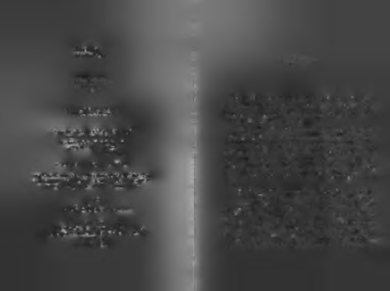
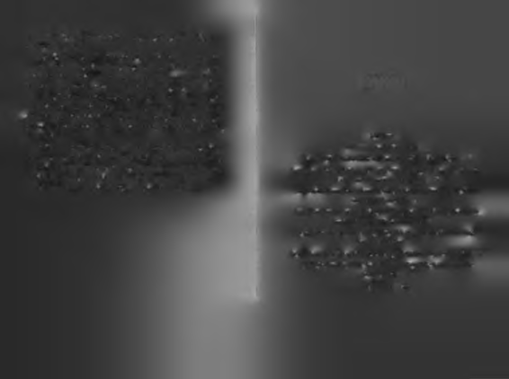
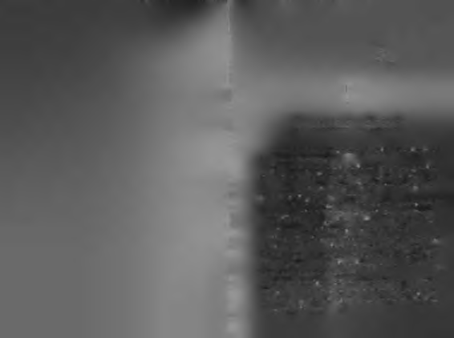

İstanbul'da doğan yazar, Ankara Üniversitesi Hukuk Fakültesi'ni bitirdi
ama hukuk alanında hiç kariyer yapmadı. Bir dönem Çocuklar Duymasın
dizisinin senaryo danışmanlığı yaptı.
SİZSİIUZ
Çok sayıda özel şirket, kamu kurumu ve üniversitede başarı üzerine semi
KENDİ KANATLARIYLA
ner verdi. Kendi alanında ilk üçte olan bazı lider, star ve işadamlarına "öy
UÇMA DERSLERİ
küsü yazılmaya değer bir iş başarma" danışmanlığı yaptı.
Kişisel Gelişim Merkezi'nin kurucusudur. Kigem.com Türkiye'nin ilk kişi
sel gelişim içerikli internet sitesidir ve Türkiye'de "Beyin Haftası" kutlamalarını yürütmektedir.
Türkiye'de "kişisel gelişim uzmanı" titrini ilk kullanan kişi olan Mümiı
Sekman, dünyanın metrekaresine düşen başarılı insan sayısını artırmayı ki
şisel misyonu sayıyor.
Rakamlarla Mümin Sekman'm Kariyeri (Mart 2008)
• İlk kitabını 21 yaşında yazdı.
• Bugüne kadar 8 kitabı yayınlandı.
• Türkiye'nin 40 şehrinde seminer verdi.
• Kitaplarının toplam satışı 800.000'i geçti.
• Seminerlerine 60.000'den fazla kişi katıldı.
• Web sitesi Kigem.com'a 70.000 kişi üye oldu.
• "H er Şey Seninle Başlar" kitabı 2 yılda 500.000 baskı yaptı.

Alfa Yayınları 1891
Kişisel Gelişim 62
TEŞEKKÜR
LİMİT SÎZSİNİZ
Mümin Sekman
İlk teşekkür 'fikrimin görsel tasarımcısı', değerli dostum
Emrah Yücel'e. Yaptığı şık ve zekâ dolu kapaklar, okurdan
1. Basım : Mart 2008 (100.000 adet)
ISBN : 978-975-297-990-1
önce beni motive ediyor. Fikirlerime giydirdiğin o güzel yüzler için çok teşekkürler kardeşim.
Yayıncı ve Genel Yayın Yönetmeni M. Faruk Bayrak
Bu kitaba özel katkıda bulunan bazı isimler var sırada.
Yayın Yönetmeni Rana Gürtuna
Zekâ ve estetik dolu dekorasyonu için Nurettin Aksoylu'ya,
Pazarlama ve Satış Müdürü Vedat Bayrak
kitap içi vinyetler için Sefa Karahan'a, işlerini çok iyi yapabil
Kapak Tasarımı Emrah Yücel
Emrahyucel.com
dikleri için Burhan Eray ve Fatih Yeşilbaş'a, organizasyonel
desteği için Funda Başman'a, çeşitli konularda araştırma
© 2008, ALFA Basım Yayım Dağıtım Ltd. Şti.
asistanlığı için Görkem Özkan'a, uğurlu bilyeler için Tuğçe
Kitabın Türkçe yayın hakları Alfa Basım Yayım Dağıtım Ltd. Şti.'ne aittir.
Kutluay'a, İkarus danışmanlığı için Yiğit Bengi'ye minnetta
Yayınevinden yazılı izin alınmadan kısmen ya da tamamen alıntı yapılamaz,
rım.
hiçbir şekilde kopya edilemez, çoğaltılamaz ve yayımlanamaz.
Dostluklarıyla kitaba çeşitli şekillerde katkıda bulunan;
Baskı ve Cilt
Ahmet Söylemez, Ahmet Yıldız, Banu Özdemir, Cansel
M elisa M atbaacılık
Poyraz, Çağlar Çoroğlu, Derya Yavaş, Ebru Karahan, Elif
Tel: (212) 674 97 23 Faks: (212) 674 97 29 .
Genç, Sinan Poyraz, Sinem Ersever, Tuluhan Tekelioğlu,
Alfa Basım Yayım Dağıtım Ltd. Şti.
Onur Hmçer, Özlem Çakır, Kazım Kahraman, Haşan Yançıl,
Ticarethane Sokak No: 53 34410 Cağaloğlu İstanbul, Turkey
Hilmi Erdoğdu, Melih Bölükbaşı, Necati Babaoğlu, Nilüfer
Tel: (212) 511 53 03 - 513 87 51 - 512 30 46 Faks: (212) 519 33 00
Kas, Osmantan Erkır, Sadık Gültekin, Selma Tür keş, S-M-O
Sekman'lar, Yelda Açıkgöz, sizler de iyi ki varsınız. Hangini

zi daha çok sevdiğimi anlayamayasmız diye alfabetik sıraladım isimlerinizi!
Her Şey Şenine Başlar çıktıktan sonra katkıda bulundukları için o kitabın teşekkür listesine giremeyen, ama minnettarlık duygularımı da söylemeden duramayacağım bazı insan
İÇİNDEKİLER
lar var sırada. Kitabı TV programlarında tavsiye eden Hülya
Avşar ve Seda Sayan'a; geleneksel dostlar Birol Güven ve Tamer Karadağlı'ya, kitapla fotoğraf çektirip kitabın "okur yüzü" olan Deniz Akkaya'ya, telefonlarıyla beni onore eden süper star Ajda Pekkan ve başbakan yardımcısı Cemil Çiçek'e de teşekkürler.
Teşekkür • v
Takdir edersiniz ki, kitaplar beynin çocuklarıdır ve yazar
Şu Hayatı Nasıl Yaşamalı? • 2
ların beyni suyla çalışmaz! Kitap yazarken kendime rüşvet
Yaşamak İçin Yükselmek Mi, Yükselmek İçin Yaşamak Mı? • 6
olarak verdiğim, binlerce kahve ile yüzlerce "etipuf" ve "çu
Kendi Kanatlarıyla Yükselmek İçin Doğanlar: Boşlukta Kanat Açmadan,
buk kraker"e de huzurlarınızda özürlerimi sunuyorum!
Uçup Uçamayacağını Bilemezsin! • 26
Üzgünüm, yazmak için sizi yemek zorundaydım!
Önce Kendi Kanatlarına Güven: Sürekli Kanatları Kırpılan Bir Minik
Serçenin Hikâyesidir! • 34
Kendi Kabuğunu Kırmak: Kafesin İçinden Çıkmak Yetmez, Kafesi De
Kafasının İçinden Çıkarmalı İnsan! • 44
Uçaklardan Yükselme Dersleri: Kendi Kanatlarıyla Uçmanın Doğal
Yasaları Nelerdir? • 65
Kendi Kanatlarıyla Uçmak İsteyenler İçin Yeni Bir 'Başarı Müfredatı' • 78
Limit Sizsiniz: Kendiniz Kadar Başarılı, Kendiniz Kadar Başarısız
Olacaksınız! • 245
Dipnotlar • 255
